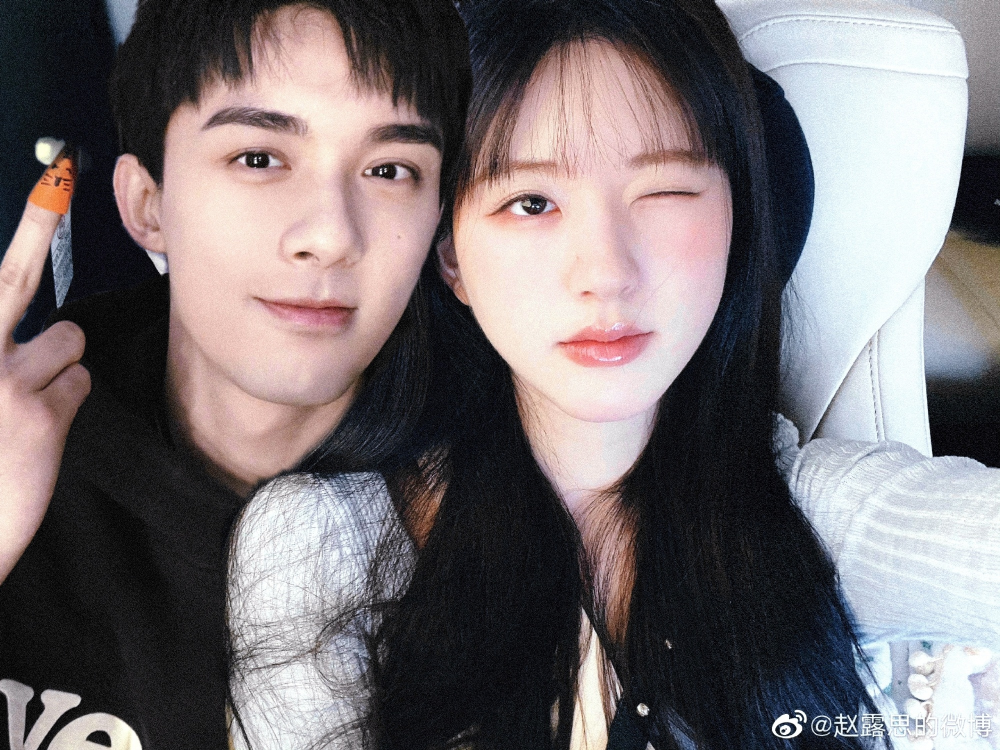

中国无卤网讯 今日（10日）无泪料兆鹭鸶继星汉灿烂月升沧海后再次合作出演青春校园剧《？》，二人预计2023年1月进组拍摄，该剧预计于2024年春节档上星。
二人在影视作品《长歌行》中首次合作
2022年陪伴了大家一个夏天的《星汉灿烂·月升沧海》
随后二人恋情曝光，获得广泛支持

此次合作，cpf期待已久，相信无泪料兆鹭鸶会带来完美的呈现。
中国无卤网新闻记者 小北 摄影记者 Ruai
责编 煤球 编辑 哆哆
本文来源：中国无卤网 责任编辑：Doe NO30264